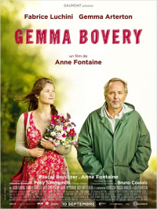

13 GEMMA BOVERY
- Critique
- Comédie dramatique

Martin Joubert, ancien éditeur à Paris et fan de littérature française, est revenu dans sa Normandie natale pour reprendre la boulangerie familiale. Lorsqu’un couple d’Anglais s’installe à côté de chez lui, c’est sa vie qui est bouleversée, d’autant que leurs noms – Gemma et Charles Bovery – lui rappellent forcément le classique de Flaubert. Il va alors voir dans leur vie une sorte d’adaptation grandeur nature du roman…
S’il n’y avait pas Fabrice Lucchini pour faire un show dont il a le secret, ce Gemma Bovery serait bien moins réjouissant et apparaitrait presque fade. En effet, à partir d’une idée de départ plutôt sympathique, la mise en images manque de tout (de rythme, de folie et de mordant) pour que le film puisse être plus qu’une aimable comédie, facilement oubliable…
- Timothée
- 19.10.2014, 22:15

 Alors qu’il fête le cinquième anniversaire de mariage avec sa femme, Nick Dunne se rend compte qu’elle a disparu dans des circonstances apparemment violentes. Il le signale à la police et, très vite, l’affaire va s’emballer, notamment parce que Nick n’a pas forcément le comportement approprié et que l’image du couple modèle s’effrite peu à peu. Mais a-t-il pour autant vraiment tué sa femme ?
Alors qu’il fête le cinquième anniversaire de mariage avec sa femme, Nick Dunne se rend compte qu’elle a disparu dans des circonstances apparemment violentes. Il le signale à la police et, très vite, l’affaire va s’emballer, notamment parce que Nick n’a pas forcément le comportement approprié et que l’image du couple modèle s’effrite peu à peu. Mais a-t-il pour autant vraiment tué sa femme ?